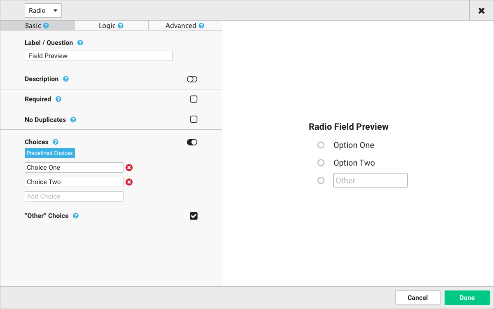
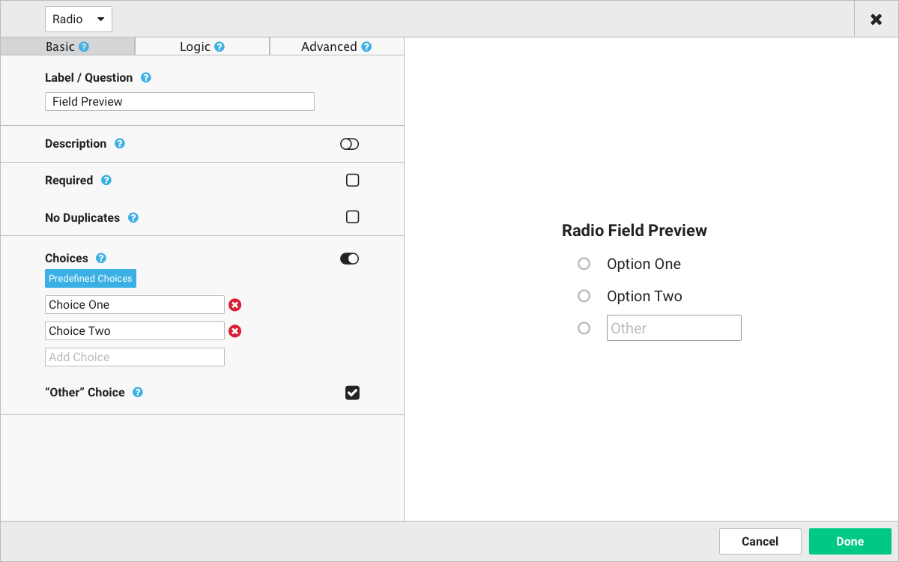

Form Builder
Redesign

The first version of the form builder was developed with a tight deadline. Because of this, there were a few areas of friction when creating a new form. I lead the redesign of the Form Builder and wanted to take time to research, understand, prototype, and test a design before we began building. It’s a lot easier to adapt the design to new changes than rewrite the code.
Competitive Analysis

The basic use-case for this app is to build a form. In a Healthcare environment, forms are created for patient questionnaires and assessments. To start with these simple workflows I explored 6 different form builders. I was researching other builders to discover a sort of baseline for form builders. What features are present and how are they implemented in the design? How are they labeling these features? I took a basic assessment form and tried to recreate it in each builder. I took notes on what liked and disliked from the experience and its efficiency creating the form.
Prototyping


With inspiration from my research, I set out creating wireframes. From these wireframes I built a clickable prototype using InVision. I had the basic use down pretty quickly, but this is a Healthcare form builder so there were many advanced feature I had yet to consider.

Socializing
After considering the advanced features I opened up the prototype to the team for their feedback. This project is currently still being socialized and tested, but I think the new app creates an overall better experience than the previous version. I look forward to learning from users and the team on how to make this form builder even better.
 
